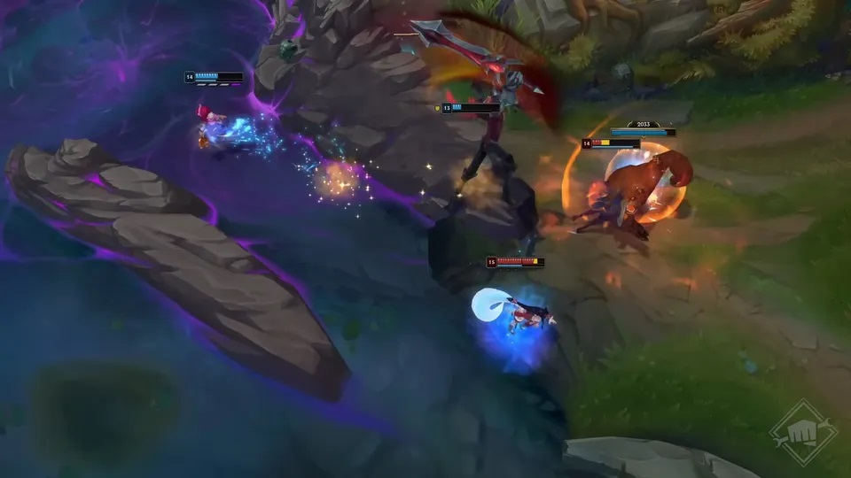

LMHT: Riot ra mắt teaser mùa giải 2024 với nhiều thay đổi đáng chú ý
Mùa giải LMHT 2024 hứa hẹn sẽ mang đến nhiều thay đổi trong lối chơi của game thủ, đặc biệt là khi Riot đang nhá hàng một loạt các chỉnh sửa liên quan đến bản đồ và hệ thống quái trong Summoner's Rift.
Mới đây, teaser mùa giải 2024 đã chính thức được Riot Games đăng tải, và ngay lập tức game thủ đã nhận ra những điểm đáng chú ý được nhà phát hành giới thiệu. Ấn tượng nhất có lẽ là sự thay đổi của hệ thống quái rừng cũng như những chi tiết khác lạ của bản đồ Summoner's Rift. Đây hứa hẹn sẽ là những điều chỉnh mang đến ảnh hưởng lớn trong lối chơi của giai đoạn tiền mùa giải 2024 sắp tới.
Đầu tiên, người chơi có thể nhận ra sự thay đổi về quái rừng khi Sứ Giả Khe Nứt, Baron Nashor hay cả Bùa Xanh/Đỏ và Cua Kì Cục đều khoác lên mình một diện mạo khác lạ mang đậm chất Hư Không. Những quái rừng này được điều chỉnh tông màu thành màu tím chủ đạo, đồng thời được thay đổi về ngoại hình so với phiên bản hiện tại (và có thể hệ thống bùa lợi cũng sẽ được thay đổi). Đặc biệt hơn ở hang Sứ Giả Khe Nứt còn xuất hiện một vài sinh vật Hư Không mới trong mùa giải 2024 sắp tới

Một điểm chú ý nữa trong teaser được Riot công bố là sự thay đổi của địa hình bản đồ Summoner's Rift khi một số chi tiết ở khu vực hang Baron hay đường giữa đều có sự thay đổi nhất định. Những thay đổi này hoàn toàn giống với những thông tin được leak trước đó, và nhiều khả năng game thủ LMHT sẽ chào đón một bản đồ mới với những chỉnh sửa địa hình trong mùa giải 2024 sắp tới. Đây hứa hẹn sẽ thay đổi ảnh hưởng mạnh mẽ lên lối chơi của game thủ, đặc biệt là với những người đi rừng
